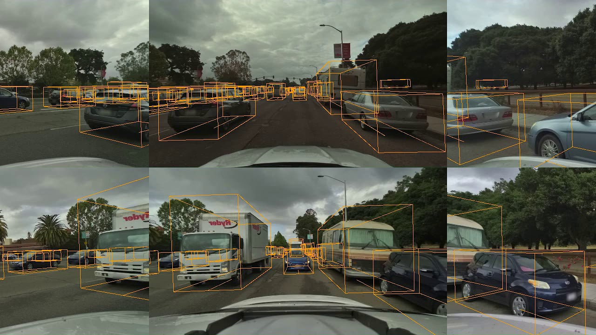

Perception for Self Driving Cars
Project Overview
In this multifaceted project revolving around computer vision and perception for self-driving cars, I extensively engaged with deep learning techniques to develop several prototype solutions essential for autonomous vehicle operations. Here is a detailed summary of the various sub-projects I have successfully completed:
Sub-projects
-
Road Segmentation
Utilized fully convolutional networks and experimented with different up-sampling methods including transposed convolutions to create a model capable of road segmentation. The model utilized the backbone network VGG-net, demonstrating promising results on a baseline dataset.
-
2D Object Detection
Incorporated the YOLO algorithm in a deep learning network to achieve 2D object detection, with special attention to various traffic scenarios. The project involved working with anchor boxes, intersection over union (IoU), and bounding box predictions to identify and locate objects in a given cell using different stages of the YOLO algorithm.
-
Multi-Task Learning
Developed a multi-task learning solution targeting depth estimation and semantic segmentation. In this phase, I delved into constant depth features and object segmentation within street view images using the cityscapes dataset. This involved the innovative use of an MTAN attention network, which showcased the utility of merge filters and attention modules in object recognition and location prediction.
-
3D Object Detection
Built a 3D object detection system utilizing deep learning techniques trained on the Lyft dataset from the 3D object detection challenge. The system leveraged feature pyramid networks and various loss functions, including focal and L1 losses, to facilitate the detection of cars, cyclists, and pedestrians in a 3D scene.
-
Bird’s Eye View Visualization
Implemented an advanced system for generating a bird's eye view of the environment through computer vision techniques. The project utilized the UNetXST technique, incorporating homography and inverse homography procedures to transform and refine images for a comprehensive aerial view. This involved learning homography matrix parameters with spatial transformers and applying them in a convolution network, emphasizing linear interpolation and matrix multiplications.